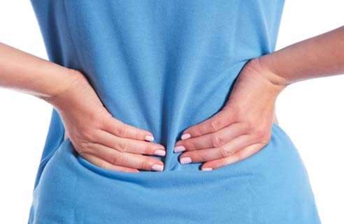
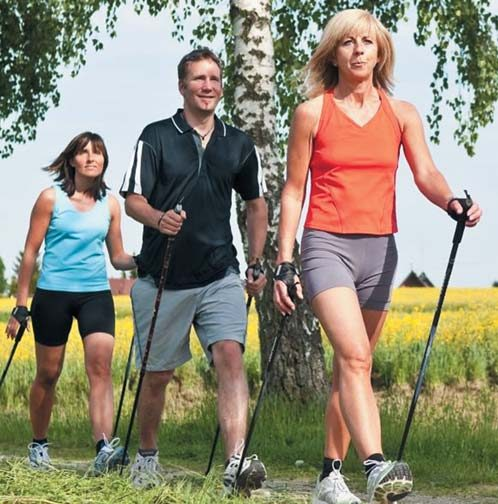
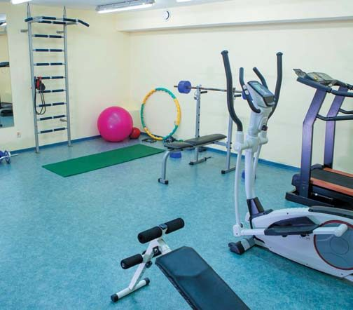

Здоров'я стоматолога · журнал «ДентАрт» 2020 №1
Здоров'я стоматолога: первинна профілактика
Dentist's Health: Primary Prevention
У суспільстві і медичному середовищі загальноприйнято приділяти увагу профілактиці захворювань у населення в цілому, людей різних вікових груп, жителів екологічно неблагополучних регіонів, вагітних, робітників підприємств з професійними шкідливостями. Програм профілактики, особливо первинної, для самих лікарів, на превеликий жаль, не існує. Наявні в окремих лікувальних установах підходи до диспансеризації медичного персоналу в основному базуються на виявленні вже існуючих захворювань і реабілітації пацієнтів.
Не секрет, що якість і ефективність лікування, що його ведуть лікарі, залежать не тільки від рівня їхньої освіченості та матеріально-технічних умов, в яких вони працюють, а й від стану їхнього власного здоров'я.
Фактори ризику для здоров'я стоматолога
Стоматологічна допомога належить до наймасовіших видів медичної допомоги. Частота звернень до лікарів-стоматологів посідає друге місце після терапевтичної допомоги. Вступаючи на стоматологічний факультет, мало хто замислюється над тим, що стоматологія — не тільки шановна престижна медична спеціальність, а й джерело численних професійних шкідливостей, які ставлять стоматолога в один ряд з представниками небезпечних професій, трудова діяльність яких оцінюється як шкідлива і небезпечна (3-й клас умов роботи за гігієнічними нормами), (табл. 1).3,4
- Наявність виробничого пилу
- Фізичні фактори (вібрація, шум, ультразвук)
- Хімічні чинники (гострі і хронічні інтоксикації)
- Біологічні чинники (бактеріальна аерозоль, вірусні інфекції)
- Перенапруження окремих органів і систем (фізичне, емоційне)
Специфіка роботи сучасного лікаря-стоматолога зумовлена впливом психологічного стресу, наявністю емоційної напруги, вимушеного положення тіла, гіподинамії, високого ризику зараження інфекційними хворобами, напруги очей, тривалого впливу вібрації, що поєднується зі статичними м'язовими навантаженнями, шумом, емоційною напругою (табл. 2).6,13
- Переживання відповідальності за життя і здоров'я пацієнта
- Необхідність швидкої реакції на зміну стану пацієнта під час маніпуляції
- Конфліктні ситуації з пацієнтами
- Підвищена агресія і жорстокість окремих пацієнтів
- Брак часу при прийомі великої кількості пацієнтів
- Фізична втома при тривалих маніпуляціях
- Ризик перехресного інфікування
- Конфліктні ситуації всередині колективу
- Неадекватна матеріальна і моральна винагорода
- Неготовність покластися на професіоналізм колег
- Проблеми професійного зростання і кар'єри
- Складні умови особистого життя, конфлікти в родині
- Погано обладнане робоче місце
- Посилення бюрократизму і загальне почуття невпевненості
Характерними також є тривала часто повторювана напруга окремих м'язових груп у неприродному вимушеному положенні, прямий і опосередкований контакт з хімічними речовинами, а також юридична і соціальна незахищеність.10,17,18 Спільна дія перерахованих факторів підсилює ефект їх негативного впливу на здоров'я стоматолога.
Важливо зазначити, що в останнє десятиліття у стоматології, як у жодній іншій галузі медицини, відбувається активне впровадження нових лікувально-діагностичних технологій, сучасного обладнання, нових медикаментозних засобів, практично повне оновлення пломбувальних матеріалів. У зв'язку з цим стоматологи є значною когортою медичних працівників, які потребують особливої уваги в плані вивчення їх умов праці, способу життя, а також стану здоров'я.
Стан здоров'я стоматологів України
В Україні задовільним свій стан здоров'я вважають 39,7% чоловіків-стоматологів та 48,1% жінок.8,9 Структуру накопичувальної захворюваності стоматологів у залежності від статі подано в таблиці 3.
| Вид захворюваності | Чоловіки | Жінки |
|---|---|---|
| Хвороби органів травлення | 63,2 | 40,7 |
| Хвороби кістково-м'язової системи | 47,1 | 22,2 |
| Хвороби нервової системи | 39,7 | 14,8 |
| Хвороби ЛОР-органів і зору | 27,9 | 22,2 |
| Ураження сечостатевої системи | 25,0 | 18,5 |
| Алергійні захворювання | 25,0 | 13,0 |
| Хвороби органів дихання | 23,0 | 31,5 |
| Хвороби кровообігу | 13,0 | 16,7 |
| Хвороби шкіри і сполучної тканини | 13,2 | 11,4 |
| Інфекційні захворювання | 10,8 | 14,8 |
Дбають про свій стан здоров'я лікарі-стоматологи в останню чергу! За наявності захворювання в лікувальні установи звертаються тільки 27,9% чоловіків і 37,0% жінок-стоматологів. 57,4% чоловіків і 66,7% жінок не дотримуються лікарських приписів, переносять хворобу «на ногах», 20-28% колег вдаються до самолікування.
Ми провели одномоментний порівняльний аналіз стану соматичного, психічного і стоматологічного здоров'я стоматологів і терапевтів у віці 35-44 років, що мешкають в одному клімато-географічному регіоні.14 Найвищий рівень соматичної захворюваності зареєстрований у групі стоматологів-жінок — 52,0%. Слід зазначити, що в цілому стоматологи мають на 16% більше патології внутрішніх органів у порівнянні з терапевтами.
Результати вивчення психоемоційного статусу стоматологів і терапевтів з аналізом їх особистісної тривожності, рівня стресостійкості, соматичних скарг, типу особистості свідчать, що рівень стресостійкості за Айзенком лікарів-терапевтів і лікарів-стоматологів однаковий як у цілому в групах, так і окремо у жінок і чоловіків, проте рівень особистісної тривожності достовірно вищий у групі терапевтів — у середньому в 1,4 раза. Найбільш виражена нейрогенна складова в шкалі тривожності — як у лікарів-стоматологів, так і у терапевтів.
«Ревматоїдний» фактор при тестуванні соматичних скарг виражений більшою мірою у стоматологів (у середньому в 1,8 раза), що може бути пов'язано з професійними шкідливостями спеціальності. У жінок-стоматологів цей показник вищий в 1,7 раза. Рівень скарг з боку серцево-судинної системи і шлунково-кишкового тракту в групах був майже однаковим, тільки в групі стоматологів скарги на серце у жінок перевищували аналогічний показник у чоловіків у 3,5 раза. Загальний показник анкет «тиск скарг» був найвищим у групі жінок-стоматологів.
Заслуговує на увагу і стан стоматологічного статусу обстежених. Так, у групі стоматологів поширеність карієсу зубів становила 98,0 ± 1,98% при середній інтенсивності 9,96 ± 0,68 (у чоловіків — 11,0 ± 0,76, у жінок — 8,92 ± 1,2; p < 0,05). Наявність уражень тканин пародонту, переважно запального характеру, констатовано у 58,0 ± 6,9% (у чоловіків — 68,0 ± 4,3%, у жінок — 48,0 ± 5,3%; p < 0,05). У лікарів-терапевтів поширеність карієсу зареєстрована у 100% при середній інтенсивності 18,9 ± 0,45 (у чоловіків — 19,16 ± 0,6, у жінок — 18,64 ± 0,67; p < 0,05); захворювання тканин пародонту — у 82,0 ± 5,9% обстежених (у чоловіків — 88,0 ± 5,7%, у жінок — 76,0 ± 4,6%; p < 0,05). У той же час патологію слизової оболонки рота діагностували втричі частіше у лікарів-стоматологів та майже в 2 рази більше у чоловіків, як стоматологів, так і терапевтів.14
Такий характер захворюваності лікарів і особливо стоматологів викликає серйозне побоювання з приводу майбутнього профілактичної медицини та обґрунтовує необхідність активного впровадження первинної профілактики для лікарів.1,5,7
Структура первинної профілактики
Можливими варіантами вирішення проблем первинної профілактики у стоматологів мають бути такі кроки:
- інформування абітурієнтів і студентів про особливості і шкідливості професії лікаря-стоматолога;
- підвищення безпеки роботи лікаря-стоматолога;
- постійний моніторинг рівня здоров'я стоматологів, в тому числі стоматологічного;
- профілактика соматичної, стоматологічної захворюваності, психологічних порушень у лікарів-стоматологів;
- матеріальне і моральне заохочення здорових стоматологів, які активно вдаються до первинної профілактики.
В основі найефективнішої етіологічної профілактики — знання причини виникнення захворювань. У відповідності із сучасними уявленнями, причиною будь-якої патології є стан відповідних систем організму, а не хвороботворний фактор, що як умова лише виявляє ті сторони морфофізіологічних систем конкретного організму, які не пристосовані до фізіологічної взаємодії з певними характеристиками зовнішнього для організму середовища.2
Збереження здоров'я стоматологів базується на оптимізації умов праці, дотриманні здорового способу життя, задоволеності роботою, забезпеченні достатнього рівня матеріального благополуччя, ліквідації шкідливих звичок, первинній профілактиці стоматологічних захворювань.
Законодавчо встановлений для лікарів-стоматологів 33-годинний робочий тиждень (при 6-денному тижні — робота на день не більше 5 год. 30 хв; при 5-денному тижні — 6 год. 36 хв), що зумовлено особливостями професійних шкідливостей спеціальності. Оптимізація умов праці базується на вмінні керувати собою (фактор рівня професіоналізму лікаря-стоматолога); формуванні комфортного психологічного клімату в колективі, сім'ї; адекватному виборі організаційних технологій у роботі; забезпеченні біобезпеки лікаря-стоматолога; правильній організації робочого місця.15,16 Головні компоненти профілактики стресових ушкоджень в організмі стоматологів — на рис. 1.




Оптимальний режим роботи стоматолога
В умовах сучасних технологій лікування пацієнтів для профілактики порушень постави, гіпертонусу м'язів спини, поперекового больового синдрому у стоматолога найкращою є технологія роботи «в 4 руки». Для профілактики втоми лікаря на стоматологічному прийомі важливо дотримуватися таких вимог:
- на початок робочого дня не планувати складні роботи, що вимагають великих затрат часу й енергії;
- протягом першої години робота повинна бути нескладною і нетривалою;
- через 2 години доцільно зробити перерву на 10-15 хв;
- між пацієнтами повинен бути 5-хвилинний відпочинок;
- у середині робочого дня потрібна перерва на 30-60 хв;
- 80% робочого часу слід працювати сидячи.
Під час відпочинку бажано провітрювати кімнату, виконувати рухи для зняття напруженості, зробивши 2-3 глибокі вдихи. Протягом першої половини паузи — посидіти, розслабитися, а протягом другої — ходити, виконувати активні рухи. Актуальний феномен активного відпочинку І. М. Сєченова — стомлені м'язи краще відпочивають під час роботи інших м'язів (гімнастика ввідна, фізкультпаузи). Заслуговує на увагу наявність у клініці кімнати психофізіологічного розвантаження з естетичним інтер'єром, зручними меблями, музикотерапією, іонізацією повітря, прийомом тонізуючих напоїв та імітацією природного оточення (відео, звукова, сенсорна).
Забезпечення біобезпеки роботи стоматолога досягається організацією централізованого стерилізаційного відділення (кабінету), наявністю в робочому клінічному залі бактерицидної лампи над вхідними дверима, пауз після прийому пацієнтів для проведення дезінфекції приміщення, обладнання, меблів, а також обов'язковим застосуванням стоматологами професійних засобів індивідуального захисту під час прийому пацієнтів.
Правильна організація робочого місця стоматолога передбачає низку умов:
- температура повітря в приміщенні повинна бути 18-20°;
- відносна вологість повітря в кабінеті бажана 30-45%;
- повітря у приміщенні має рухатися;
- вікна мають виходити на північ або схід;
- стіни і стеля повинні бути пофарбовані у світлі тони (світло-блакитний, світло-зелений, світло-сірий, бежевий);
- ергономічне розміщення обладнання і меблів (зони лікаря, асистента, дезінфекції, лікувально-діагностична);
- якісна стоматологічна установка (повітряний і регульований електричний привід, центральна подача повітря і води, пилосос, слиновідсмоктувач, розташування рукавів і т. д.);
- правильне освітлення робочого поля.
Ергономічний стиль роботи кожен стоматолог підбирає індивідуально. Однак з метою профілактики професійних захворювань важливо усунути напружені положення тіла (правильна установка стоматологічного крісла для кожного пацієнта з урахуванням співвідношення зросту пацієнта і лікаря, гостроти зору лікаря, умов освітленості), важливі правильне розташування ніг, підбір взуття, контроль за справністю і зносом обладнання для профілактики вібраційної хвороби. Правильна ергономічна робоча поза повинна відповідати стандарту ІСО 1122611,12,19 — це положення тіла в симетричній позиції, коли через очі, вуха, плечі, лікті, стегна, коліна і щиколотки можна провести паралельні лінії, головний тягар при цьому повинен припадати на кістяк, а м'язи і зв'язки навантажуються мінімально.
Для профілактики хвороб хребта важливими є не тільки правильне положення тіла, але й комплекс вправ, масаж, дотримання 10 золотих правил — установок «спінальної школи» за Krammer.
- Ти повинен рухатися
- Тримай спину прямо
- Тренуйся ходити навпочіпки
- Не піднімай важких предметів
- Розподіляй вантаж і тримай його ближче до тулуба
- Уникай обертання в поперековому відділі хребта з одночасним нахилом уперед
- Не стій з випростаними ногами
- У положенні лежачи зігни ноги
- Займайся спортом: плавання, біг, велосипед
- Тренуй щодня м'язи хребта
Для профілактики артрозу і викривлення пальців рук слід виконувати гімнастику для пальців рук, для профілактики контрактури Дюпюітрена і тендовагініту — робити періодичне розвантаження правої руки, тренування лівої, теплові гідропроцедури, масаж рук і плечового пояса, працювати з асистентом. Захворюванням ніг і ступнів запобігають вправами для пальців ніг, ходінням по річковому піску, по камінню, бігом по великій гальці у воді, ваннами для ніг, їх масажем.
Під дотриманням здорового способу життя стоматологом мається на увазі комплекс оздоровчих заходів, що забезпечують збереження і зміцнення здоров'я, поліпшення якості життя і досягнення активного довголіття на основі дотримання режиму праці та відпочинку, раціонального харчування, рухової активності, розумної безконфліктної поведінки, відсутності шкідливих звичок (вживання тютюнових, наркотичних засобів, алкоголю). Щоденна мінімальна норма ходьби, яка зберігає тренованість серцево-судинної, м'язової і дихальної систем, — 10 тисяч кроків (7-8 км), мінімальна тривалість фізичних вправ — 150 хв (2,5 години) на тиждень. Рухова активність може реалізовуватися за рахунок ранкової гімнастики, скандинавської ходьби, плавання, бігу, танців, аеробіки, йоги, велосипедних і лижних прогулянок, тренажерних тренувань. Калорійність добового раціону не повинна перевищувати 2000-2500 ккал.
Стоматологові при великих витратах енергії потрібен 8-годинний сон, в положенні на боці із зігнутими ногами; після трудового дня — ванна з температурою води 35-36° 10-15 хв з валеріаною, польовим хвощем або теплий душ; тепло на ноги. Рекомендовані щоденні повітряні ванни, геліотерапія, вранці — холодний душ, обливання, корисні всі види загартовування, загальний масаж.
Первинна профілактика стоматологічних захворювань у стоматологів включає забезпечення індивідуального психологічного комфорту, збереження високого рівня соматичного здоров'я, фізіопрофілактику, систематичну професійну і повноцінну індивідуальну гігієну ротової порожнини, регулярні медичні обстеження з метою виявлення хвороботворних чинників, ранньої діагностики та запобігання розвитку захворювань.
Психологічний комфорт у професійній діяльності стоматолога — це самостійний вибір спеціальності, доброзичливий мікроклімат у трудовому колективі, моральне визнання якості роботи колегами і пацієнтами, бажана оснащеність і забезпеченість робочого місця, оптимальна організація роботи, а також юридична і соціальна захищеність.
Висновки
Реалізувати первинну профілактику у стоматолога і у пацієнтів без матеріальної задоволеності стоматолога нереально, а полягати вона повинна в гідній оплаті профілактичних заходів і їх пріоритеті, адекватній оплаті лікувальних маніпуляцій, преміюванні ініціативної діяльності лікаря, заохоченні підвищення рівня освіченості та лікарської кваліфікації, високого рівня здоров'я стоматолога, фінансуванні профілактичних заходів.
Профілактичні заходи лише тоді будуть ефективними, якщо вони здійснюватимуться НА ВСІХ РІВНЯХ: державному, трудового колективу, сімейному, індивідуальному.
Література
- Аюпов И. Ш. Профессиональные заболевания врача-стоматолога. Методы профилактики // Международный студенческий научный вестник. — 2016. — № 2.
- Воложин А. И., Субботин Ю. К. Болезнь и здоровье: две стороны приспособления. — М.: Медицина, 1998. — 480 с.
- Влияние гигиенических и эргономических аспектов труда на здоровье врача-стоматолога / Данилина Т. Ф., Сливина Л. Н., Даллакян Л. А., Колесова Т. В. // The Journal of scientific articles «Health and Education Millennium». — 2016. — Vol. 18, No1. — С. 234-236.
- Гигиеническая оценка работы врачей-стоматологов и их психоэмоционального состояния / Иванов С. В., Слюсаренко А. А., Мустафаев Р. В., Асанов И. М. // Международный журнал прикладных наук и технологий «Integral». — 2019. — № 3. — С. 143-147.
- Катаева В. А. Труд и здоровье врача-стоматолога. — М.: Медицина, 2002. — 208 с.
- Ларенцова Л. И. Профессиональный стресс стоматологов. — М.: Медицинская книга, 2006. — 148 с.
- Максимова Е. М., Сирак С. В. Анализ рисков и мер по профилактике профессиональных болезней врачей-стоматологов // Фундаментальные исследования. — 2013. — № 5-2. — С. 319-323.
- Мельникова С. В. Вивчення накопиченої захворюваності (суб'єктивного визначення загального здоров'я) лікарів-стоматологів України // Новини стоматології. — 2007. — №3 (52). — С. 84-89.
- Мельникова С. В., Запорожец Т. Н. Изучение показателей сердечно-сосудистой системы у врачей-стоматологов в условиях современной профессиональной деятельности // Світ медицини і біології. — 2012. — №2. — С. 247-277.
- Нефедов О. В., Сетко Н. П., Булычева Е. В. Современные проблемы условий труда и состояния здоровья стоматологов (обзор литературы) // Международный журнал прикладных и фундаментальных исследований. — 2016. — 1-4: 533-536.
- Оне Хокверда. Основы эргономичной работы стоматолога // ДентАрт. — 2008. — №1.
- Оне Хокверда. Освещение и сочетание цветов в стоматологической практике с точки зрения эргономики // ДентАрт. — 2008. — № 2.
- Ожгихина Н. В., Ожгихина Ж. Э. Профессиональные вредности в работе врача-стоматолога. Психофизиологический фактор // Проблемы стоматологии. — 2013. — №1. — С. 63-66.
- Петрушанко Т. О., Гавриш Н. В. Зв'язок стоматологічної захворюваності лікарів із їх психологічним статусом // Сучасна стоматологія. — 2009. — № 1. — С. 17-22.
- Профилактика и лечение профессиональных заболеваний стоматолога / Янушевич О. О., Епифанов В. А., Иваненко Т. А., Дмитриева Н. Г. // Стоматолог. — 2007. — №11. — С. 41-48.
- Профессиональные вредности в работе врача-стоматолога и профилактика последствий их воздействия: учеб.-метод. пособие / под ред. В. Ф. Михальченко, Э. С. Темкин, Н. М. Морозова и др. — Волгоград, 1998. — 26 с.
- Современное состояние условий труда врачей-стоматологов / Елисеев Ю. Ю., Березин И. И., Петренко Н. О., Сучков В. В. // Современная стоматология. — 2014. — №2. — С. 43-49.
- Темуров Ф. Т. Частота заболеваемости медицинских работников стоматологического профиля // Клиническая стоматология. — 2016. — №1 (77). — С. 72-76.
- Хакала С. Эргономичная работа стоматолога — решение проблемы // ДентАрт. — 2019. — № 3. — С. 55-57.